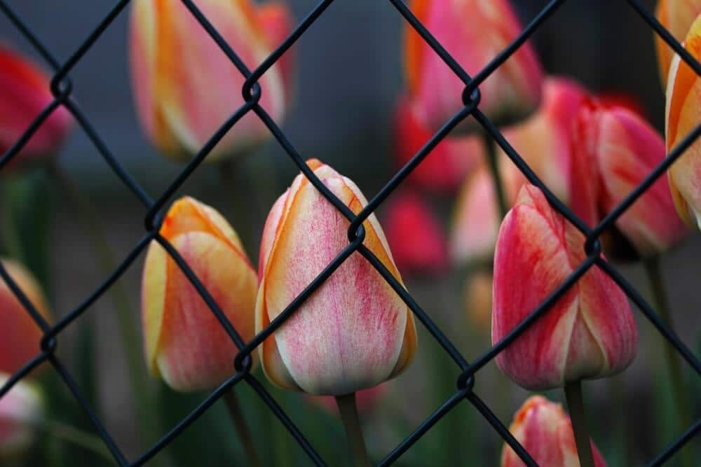

In This Guide
- A plain chain-link fence can look far better with vines, privacy slats, or reused materials, and each upgrade fits a different budget.
- Climbing plants are the cheapest route, but the vine has to suit Louisiana heat and humidity and stay in check.
- Slats add privacy and a finished look, yet anything that fills the mesh catches wind, so post strength matters.
- Galvanized, color-coated, PVC-coated, and slatted chain link each protect against rust and appearance issues in their own way.
Chain link is one of the most common fences on homes and commercial properties, and it earns that spot for good reasons. It costs less than most materials, goes up quickly, and does a solid job of marking a boundary. It also gets called bland, and a bare wire fence can look out of place next to a nice yard.
The good news is that a plain fence is easy to improve. If you like what a chain-link fence does for security and budget but not how it looks, Big Easy Fence can help you think through three simple upgrades and the fence types they suit.
Why Chain Link Gets Called Boring
Bare chain link is see-through, silver, and uniform. Nothing about it says style, and it can clash with landscaping or with a house that has a lot of character. Homeowners also mention privacy, since a wire fence lets neighbors and passersby see straight into the yard.
Those complaints are fair, and they are fixable. The mesh gives you a strong, low-cost base to build on, so an upgrade only has to cover or soften the wire.
Three Ways to Give Chain Link a Makeover
Whether you want a design of your own or just want to keep costs down, these three ideas cover most budgets and looks.
Grow a Natural Screen
Plants are the classic first move. Climbing vines and creepers cost little, and the wire gives them something to grab. Popular picks include honeysuckle, morning glory, ivy, and other creeping plants, and you can choose anything from a light green wash to a thick wall of foliage and blooms.

Before you plant, think about your climate. Louisiana heat, humidity, and long growing seasons help many plants but push others too far, and some vigorous vines can spread past the fence line or be hard to remove later. A local nursery can tell you which vines behave in your yard.
Add Wood Slats
Slats woven through the mesh close it up and create a near-solid look. That gives you more privacy and a more finished appearance, and the demand for slat kits has grown as more homeowners ask for both. Vinyl slats are common, and wood slats give a warmer, more rustic feel that suits a garden.
Wood usually costs less than vinyl up front, but it asks more of you over time. In our humid climate, wood slats need sealing to stay in good shape, so plan for that upkeep before you buy.
Reuse Recycled Materials
If the goal is the lowest possible cost, reused materials can cover a fence for very little. Some homeowners weave strips of colorful fabric through the wire, and others cut plastic bottles into shapes that mimic slats. Both give you creative freedom.
The catch is time and durability. Covering a long fence piece by piece takes patience, and fabric or plastic weathers faster than the fence behind it. This route suits small runs and creative projects better than a full property line.
| Upgrade | Cost Level | Privacy | Upkeep |
|---|---|---|---|
| Climbing Plants | Low | Grows over time | Trimming and watering |
| Wood Slats | Low to moderate | High | Sealing every few years |
| Recycled Materials | Lowest | Varies | Frequent replacement |
Plan Around Wind and Weather
Anything that fills the openings in chain link makes the fence act more like a wall. In a storm, slats, fabric, and thick vines all catch wind, and that puts extra load on the posts and the wire. Along the Gulf Coast, where summer and fall storms are a fact of life, that load deserves a thought.
If you plan to add privacy slats or a heavy plant cover, check that the fence is straight, the posts are firm, and the ties are tight. If the fence already leans or the wire sags, fix that first, and a fence repair visit is a sensible place to start.
Know Your Chain-Link Options
Not every chain-link fence looks like the silver wire around a ball field. The main differences come from the coating and the extras added to the mesh, and the right choice can do part of the makeover for you.
Galvanized (Metallic)
This is the traditional silver wire, coated in zinc to slow rust. It is usually the lowest-cost option because it has no added color or covering, and it works well where looks matter less than budget.
Color-Coated
A vinyl or polymer layer over the wire gives you a color, most often black, green, or brown. The coating also adds protection against rust and corrosion, and a dark, coated fence tends to fade into the background of a yard.
PVC-Coated
PVC coating is similar to color-coated wire. The vinyl layer has a smooth, slightly rubbery feel, gives the fence a fresher look, and keeps the metal underneath from being exposed to moisture.
Slatted
Slatted chain link is the newer answer to the see-through problem. Slats, most often made of PVC and sold in several colors, slide into the mesh and block the view from outside. Slats are a simple way to add privacy without changing the fence itself.
Chain Link Does Not Have to Be Boring
The belief that chain link is dull should not stop you from choosing it. It gives you strength, value, and a clear property line, and with plants, slats, or a colored coating it can look like it was chosen on purpose. Homeowners weighing a change of material can also compare it with other options on the fence types page, and our post on the features of chain-link fences goes deeper on what the fence does well.
If you need help with a new installation or an upgrade, get in touch with Big Easy Fence for a free estimate.
Ready to Upgrade Your Chain-Link Fence?
Whether you want a new chain-link fence or a better look for the one you have, tell us about your yard and we will talk through the options.